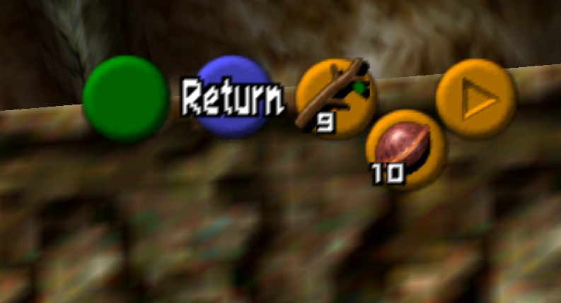

A B1 Skip is any way to reach the higher platform in the basement of the Deku
Tree starting from the water as child.
Applications
This skips four rooms in B1 including a Slingshot-locked room, allowing the
player to reach Gohma without having the Slingshot.
This trick is considered essential in randomizers as it skips an item
requirement and saves a few minutes of going through empty rooms (except for
one Gold Skulltula).
Setup
Ground Jump
If you have explosives, you can simply Ground Jump as demonstrated in the video
example. You still need to
perform the Flame Storage described below.
Flame Storage & Jump
This setup only requires a Deku Stick.
Perform a Flame Storage with the torch that lights up after stepping on the switch:
Get a Deku Stick out with your C-Buttons.
Place Link at the right of the torch, the top of the stick must be
touching the flame.
Put back the stick in your inventory with A.
Setup a precise jump to cross the gap:
Get in the obtuse corner near the block of the highest platform.
Z-Target the left wall to align yourself.
Ensure you are in the right position by rolling into the corner, if your
angle and position are right multiple rolls won’t change Link’s position.
If you slide right or left when rolling, restart the setup from the
beginning.
Do in succession two backflips, one
sidehop to the right, and one sidehop to the left.
C-Up and align your A button with the pillar coming down from the
ceiling.

Visual cues
The black lines starting from the C-Down icon and going to the
bottom-left tells you your position setup is good.
{kind=link}